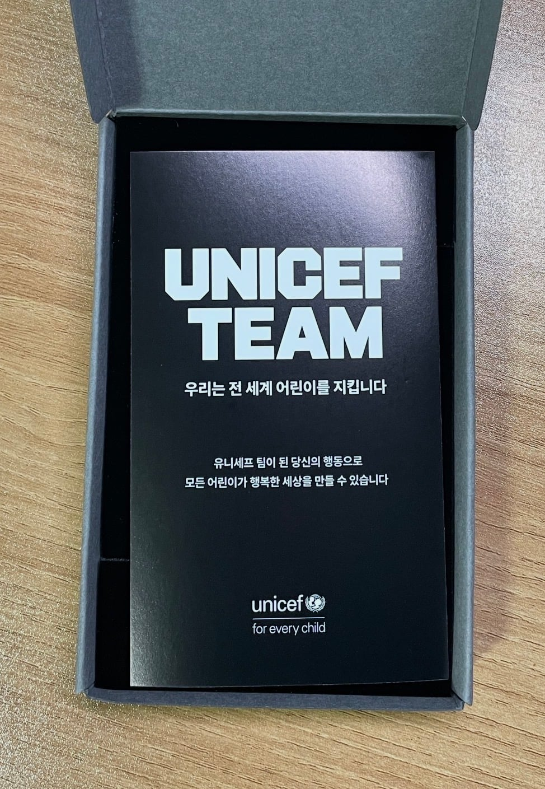
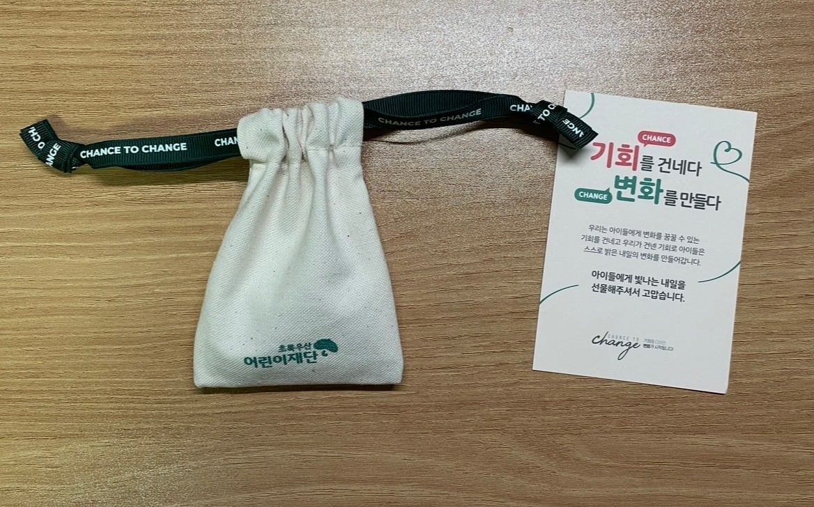
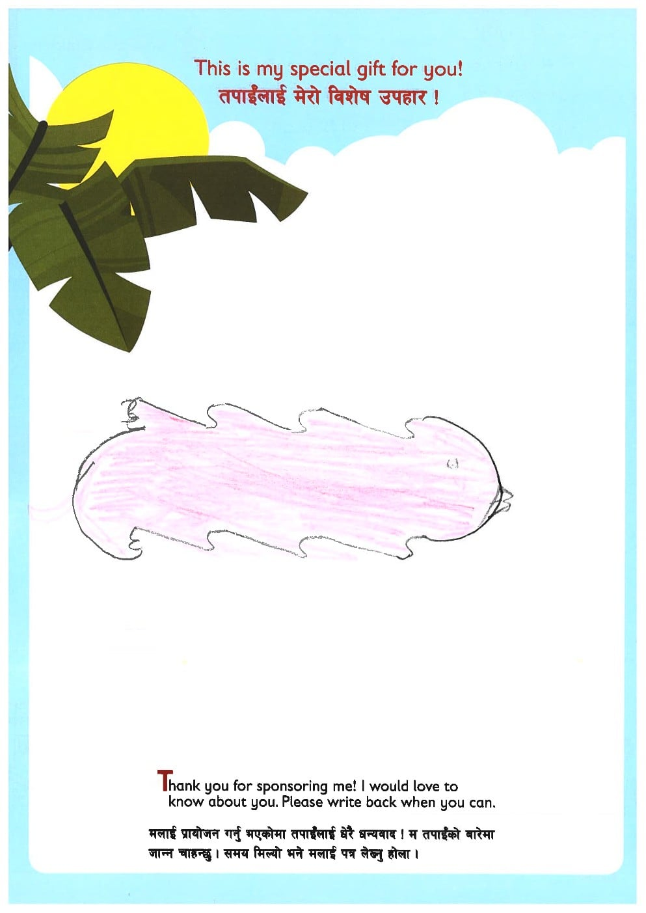
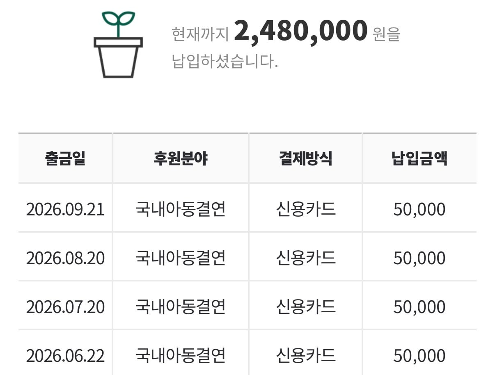
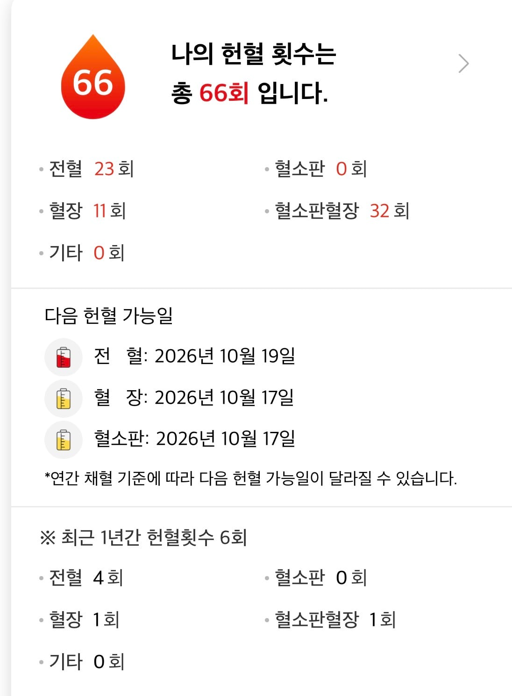
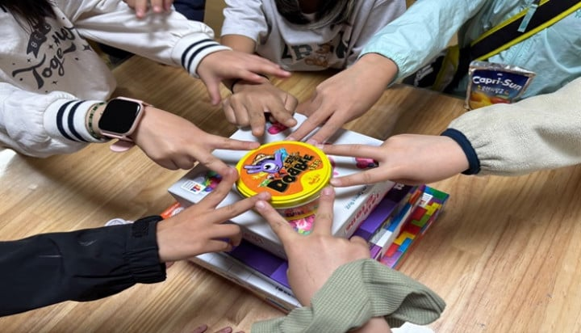
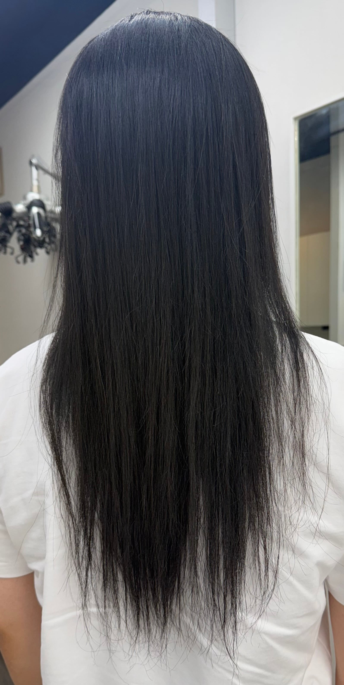
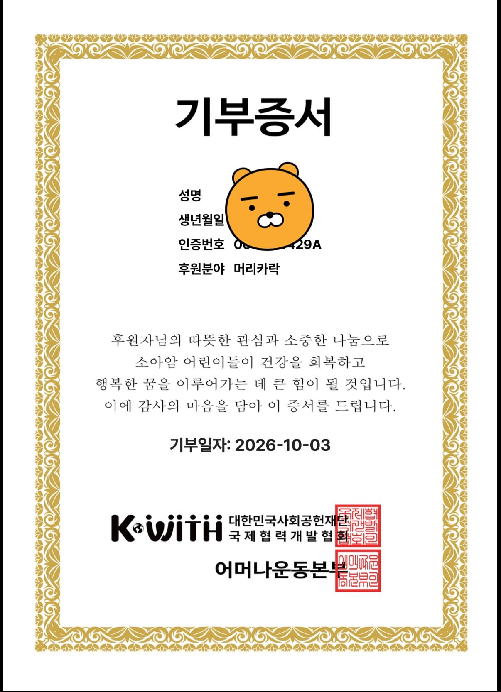

유니세프 팔찌

초록우산 팔찌

해외아동 후원

국내아동 후원

헌혈

지역아동센터기부 (곧장기부 추천)


소아암 머리카락 기부

유니세프 팔찌

초록우산 팔찌

해외아동 후원

국내아동 후원

헌혈

지역아동센터기부 (곧장기부 추천)


소아암 머리카락 기부
머리카락 기부 많이 필요함. 소아암이나 백혈병같이 머리 다 미는 애들위해서 가발하는 그런걸로 알고있음
ㅇㅇ 알긴 아는데 저걸 진짜로 하는 경우는 방송에서 말고 본인이 그냥 한 거 처음 봤음
나도 딸내미랑 같이 했음
우리 사무실에서도 그거 보고 자기 딸도 한 경우도 있고
은근히 많이 함
남자가 길러서 기부하는 케이스는 진짜 흔하지 않고 별종 소리 들으면서 살지
근데 소아암 가발 만드는 사람 말 들어보니 기부한 머리카락 품질이나 관리 힘들어서
가발 자체는 중국산 머리카락 사다 하는게 편하고 퀄리티도 좋다더라
물론 나도 길러서 기부한적있음
생각보다 남자들도 많이함 ㅋㅋ 장발은 해보고 싶은데 설명하기 귀찮으면 '기부하려구요' 하면 스무스하게 넘어가거든 ㅋㅋㅋ 잘 어울리면 냅두는데 보통 꼴보기 싫은게 99%라 목적대로 길러보고 기부테크 탐 ㅋㅋㅋ
오히려 여자가 기부하기 힘들 듯 자른게 25cm 이상 나와야 되는데 25cm 잘라낸 후 단발 길이라도 맞추려면 ㄹㅇ 라푼젤급으로 길러야 할 듯
전회사에도 있었고 현 회사에도 있었음.. 댓글처럼 남자들이 많이 함..
나도 해봤는데, 대충 2년 반 가까이 기르면 기부 가능한 길이 나오더라.
모발 기부. 미용실에 가면 자르고 난 뒤 쓰레기가 되는 머리카락도 기부의 대상이 된다. 대한민국사회공헌재단에서는 '어머나 운동'(어린 암환자를 위한 머리카락 나눔)이라고 하여 사람들의 머리카락을 기부받아 소아암환자들에게 가발을 만들어 주는 나눔 행사를 한다.
매년 약 1천 600명씩 늘고 있는 소아암환자들에게 생각지 못한 걸림돌은 탈모이다. 항암치료의 부작용 중 하나인 탈모는 타인의 평가에 민감한 청소년들에게 큰 스트레스가 되기 때문이다. 또한 항암치료를 받는 아이들은 피부가 민감해지기 때문에 100% 인모 가발을 사용해야 하는데, 맞춤형 가발은 그 가격이 수백만 원에 달하여 암환자 가족에게 경제적 부담이 되기 때문에 머리카락을 기부받아 아이들에게 가발을 만들어 주는 것.
소아용 가발 하나에는 약 1만5천~2만 가닥의 머리카락이 쓰이기 때문에 사람들의 기부가 절실하다고 한다. 기부 가능한 머리카락은 25cm 이상으로 30가닥 이상을 기부할 수 있다. 머리를 고무줄 등으로 하나로 묶은 다음 고무줄 위로 자른 후 묶인 머리카락을 서류나 작은 상자나 서류봉투에 포장해서 기부기관에 보내면 된다. 기부기관 홈페이지를 통해 기부증서를 받을 수도 있다. 흔히 알려진 바와 다르게 파마나 염색 시술을 받은 머리카락도 기부가 가능하다고 한다.
나 자신에게 기부하기 여행, 다이닝 등
기부에서 봉사로 갈아타자
재능기부
다음 기부는 나하고 사귀는거다
굿 대단하구만
저 스페셜 기프트는 뭐그린걸까? 새인가?
아직 전자발찌가 남았어!
개멋진새끼자나
아낌없이 주는 나무네
나에게 기부해라

여자에요?
난 원래 기부인증 글 오글거리는 사람인데 이건 추천 줄 수 밖에 없었다
씨발 멋있다 너
리스펙
멋있다 나는 하던것도 다 끊었는데 실천해줘서 고맙네
형냐 최고


와 리스펙!
대단하십니다. 저도 헌혈 은장 한번 받아보고 싶은데 26회에서 계속 멈춰있는 상태라...66회라니 정말 대단하십니다.
빛과 소금이 되었구나
머리 왜이리곱냐 ㅋㅋㅋㅋㅋㅋㅋ
와 머릿결 좋아보인다
받는 아이가 너무 좋아할거같네
나도 머리기부 몇년에 한번씩 하는데 할때마다
좀더 관리 열심히 해줄걸 그랬나 하고 항상 조금 후회함

나도 해보고 싶은데 머리숱이 없어서..
대단하다
선행은 개추!
대단해
대단해~
딴 건 알겠는데 머리카락은 뭐야
꽤 특이한 사람이긴 하네 ㅋㅋ ㅊㅊ